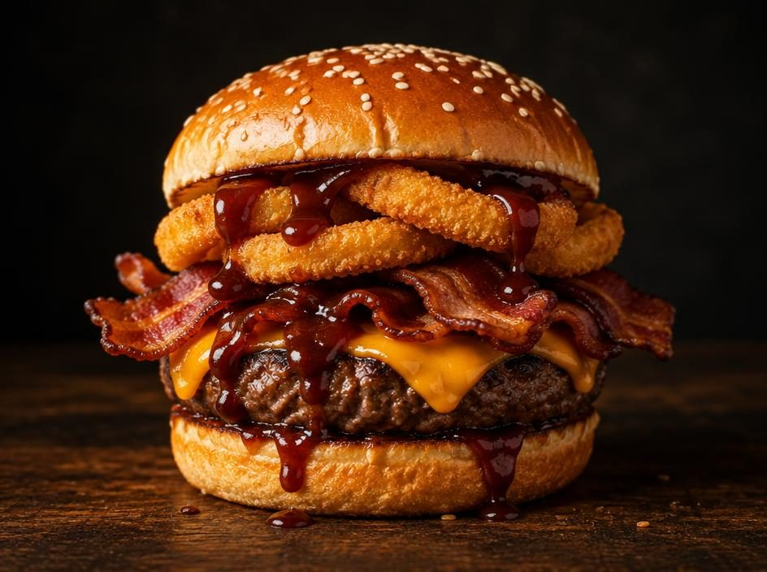
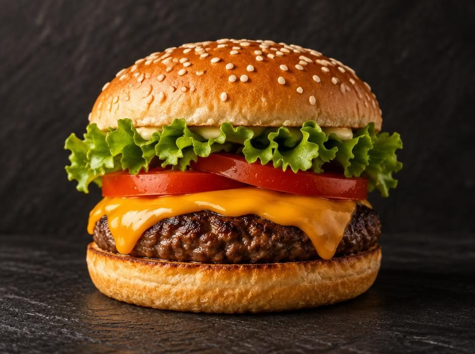
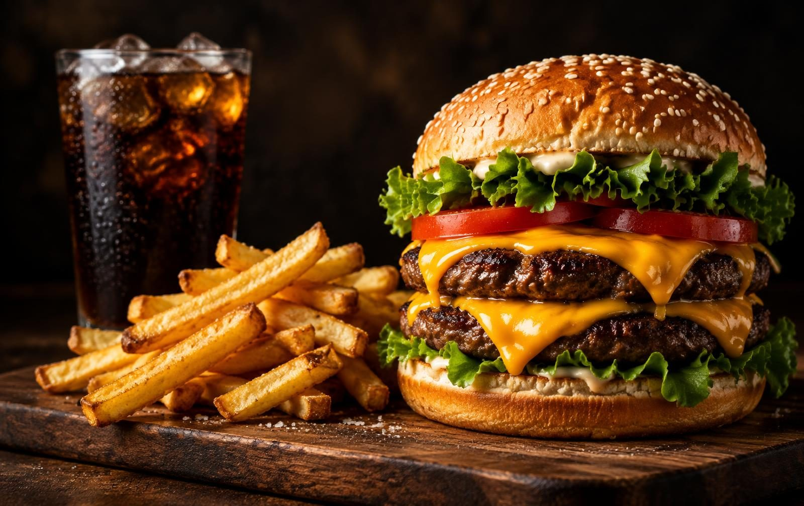
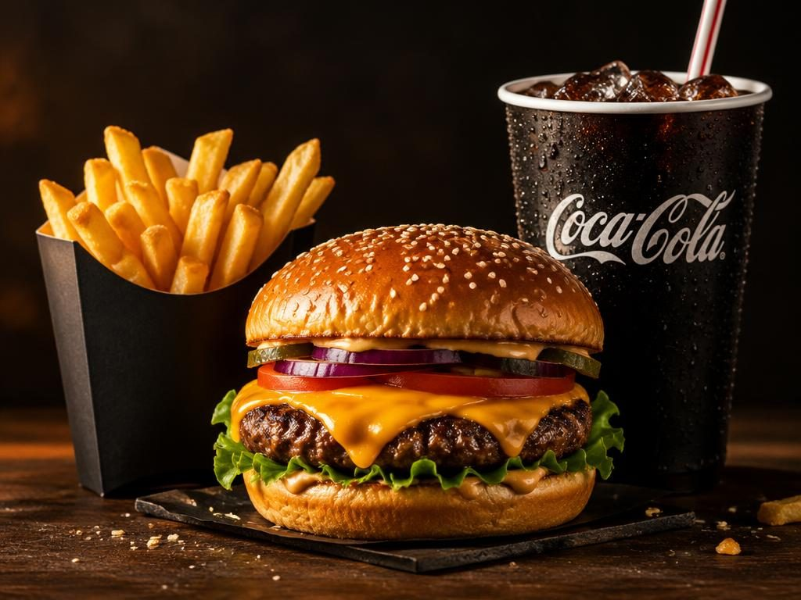

Como fazemos
O sabor vem do ingrediente, da chapa e do cuidado em cada etapa. Veja como um Chapa Bros chega à sua mesa.
Capítulo I
Macio por dentro, tostado por fora.
O pão é de massa macia, com gergelim. Passa pela chapa por alguns segundos para ganhar crosta e segurar o suco sem desmanchar.

Capítulo II
Carne moída no dia, 180g de suco.
O blend é moído em pequenas quantidades, modelado à mão e temperado só na hora de ir para o fogo, para manter a carne solta e suculenta.

Capítulo III
Calor alto, tempo curto.
A crosta é onde mora o sabor. A chapa fica bem quente para selar rápido, e o queijo derrete em cima do blend ainda na chapa.
Capítulo IV
Cada camada tem o seu lugar.
Molho embaixo, blend com queijo, depois tomate e alface. O lanche sai pronto e chega à mesa ainda quente.

Nossos compromissos
Vegetais, molhos e blend preparados no dia.
Nada fica esperando embaixo de lâmpada. Cada pedido vai para a chapa quando chega.
Opções veganas e atenção a restrições. Fale com a equipe.